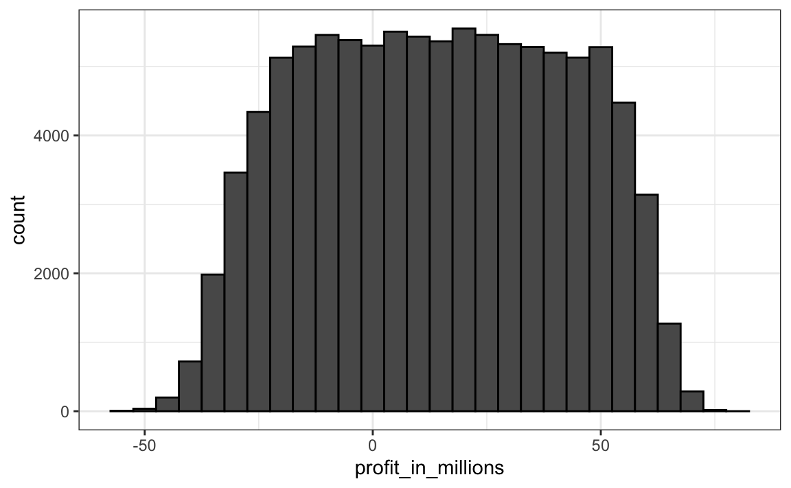

Capítulo 14 Variables aleatorias
En la ciencia de datos, a menudo trabajamos con datos que se ven afectados de alguna manera por el azar. Algunos ejemplos son datos que provienen de una muestra aleatoria, datos afectados por un error de medición o datos que miden algún resultado que es de naturaleza aleatoria. Ser capaz de cuantificar la incertidumbre introducida por la aleatoriedad es uno de los trabajos más importantes de los analistas de datos. La inferencia estadística ofrece un marco, así como varias herramientas prácticas para hacerlo. El primer paso es aprender a describir matemáticamente variables aleatorias.
En este capítulo, presentamos variables aleatorias y sus propiedades comenzando con su aplicación a juegos de azar. Luego describimos algunos de los eventos que rodearon la crisis financiera de 2007-200852 usando la teoría de la probabilidad. Esta crisis financiera fue causada en parte por subestimar el riesgo de ciertos valores53 vendidos por instituciones financieras. Específicamente, los riesgos de los valores respaldados por hipotecas (MBS o mortgage-backed securities en inglés) y las obligaciones de deuda garantizadas (CDO o collateralized debt obligations en inglés) se subestimaron enormemente. Estos activos se vendieron a precios que suponían que la mayoría de los propietarios harían sus pagos a tiempo y se calculó como baja la probabilidad de que esto no ocurriera. Una combinación de factores resultó en muchos más incumplimientos de lo esperado, lo que condujo a una caída de los precios de estos valores. Como consecuencia, los bancos perdieron tanto dinero que necesitaron rescates del gobierno para evitar cerrar por completo.
14.1 Variables aleatorias
Las variables aleatorias son los resultados numéricos de procesos aleatorios. Podemos generar fácilmente variables aleatorias utilizando algunos de los ejemplos anteriores. Por ejemplo, definir X a ser 1 si la cuenta (bead en inglés) es azul y 0 de lo contrario:
Aquí X es una variable aleatoria: cada vez que seleccionamos una nueva cuenta, el resultado cambia aleatoriamente. Vea abajo:
ifelse(sample(beads, 1) == "blue", 1, 0)
#> [1] 1
ifelse(sample(beads, 1) == "blue", 1, 0)
#> [1] 0
ifelse(sample(beads, 1) == "blue", 1, 0)
#> [1] 0A veces es 1 y a veces es 0.
14.2 Modelos de muestreo
Muchos procedimientos de generación de datos, aquellos que producen los datos que estudiamos, pueden modelarse relativamente bien como elecciones de una urna. Por ejemplo, podemos modelar el proceso de sondeo de votantes probables como sacar 0s (republicanos) y 1s (demócratas) de una urna que contiene el código 0 y 1 para todos los votantes probables. En los estudios epidemiológicos, a menudo suponemos que los sujetos de nuestro estudio son una muestra aleatoria de la población de interés. Los datos relacionados con un resultado específico se pueden modelar como una muestra aleatoria de una urna que contiene el resultado para toda la población de interés. De manera similar, en las investigaciones experimentales, a menudo asumimos que los organismos individuales que estamos estudiando, por ejemplo, gusanos, moscas o ratones, son una muestra aleatoria de una población más grande. Los experimentos aleatorios también se pueden modelar mediante selecciones de una urna dada la forma en que los individuos se asignan a grupos: cuando se les asignan, el grupo se escoge al azar. Los modelos de muestreo son, por lo tanto, omnipresentes en la ciencia de datos. Los juegos de casino ofrecen una gran cantidad de ejemplos de situaciones del mundo real en las que se utilizan modelos de muestreo para responder a preguntas específicas. Por lo tanto, comenzaremos con tales ejemplos.
Supongamos que un casino muy pequeño los contratan para consultar si deben incluir las ruedas de la ruleta entre sus juegos. Para simplificar el ejemplo, asumiremos que jugarán 1,000 personas y que la única apuesta que puedan hacer en la ruleta es apostar en rojo o negro. El casino quiere que predigan cuánto dinero ganarán o perderán. Quieren una gama de valores y, en particular, quieren saber cuál es la probabilidad de perder dinero. Si esta probabilidad es demasiado alta, no instalaran ruedas de ruleta.
Vamos a definir una variable aleatoria \(S\) que representará las ganancias totales del casino. Comencemos por construir la urna. Una rueda de ruleta tiene 18 bolsillos rojos, 18 bolsillos negros y 2 verdes. Entonces, jugar un color en un juego de ruleta es equivalente a escoger de la siguiente urna:
Los 1,000 resultados de 1,000 personas jugando son sorteos independientes de esta urna. Si aparece el rojo, el jugador gana y el casino pierde un dólar, por lo que sacamos un -$1. De otra manera, el casino gana un dólar y sacamos un $1. Para construir nuestra variable aleatoria \(S\), podemos usar este código:
n <- 1000
X <- sample(ifelse(color == "Red", -1, 1), n, replace = TRUE)
X[1:10]
#> [1] -1 1 1 -1 -1 -1 1 1 1 1Como sabemos las proporciones de 1s y -1s, podemos generar las elecciones con una línea de código, sin definir color:
Llamamos a esto un modelo de muestreo ya que estamos modelando el comportamiento aleatorio de la ruleta con el muestreo de elecciones de una urna. Las ganancias totales \(S\) son simplemente la suma de estos 1,000 sorteos independientes:
14.3 La distribución de probabilidad de una variable aleatoria
Si ejecuta el código anterior, verá que \(S\) cambia cada vez. Esto es porque \(S\) es una variable aleatoria. La distribución de probabilidad de una variable aleatoria nos dice la probabilidad de que el valor observado caiga en cualquier intervalo dado. Entonces, por ejemplo, si queremos saber la probabilidad de que perdamos dinero, estamos preguntando la probabilidad de que \(S\) esté en el intervalo \(S<0\).
Tengan en cuenta que si podemos definir una función de distribución acumulativa \(F(a) = \mbox{Pr}(S\leq a)\), entonces podremos responder a cualquier pregunta relacionada con la probabilidad de eventos definidos por nuestra variable aleatoria \(S\), incluyendo el evento \(S<0\). A esta \(F\) le decimos la función de distribución de la variable aleatoria.
Podemos estimar la función de distribución para la variable aleatoria \(S\) mediante el uso de una simulación Monte Carlo para generar muchas realizaciones de la variable aleatoria. Con este código, ejecutamos el experimento de tener 1,000 personas jugando a la ruleta, una y otra vez, específicamente \(B = 10,000\) veces:
n <- 1000
B <- 10000
roulette_winnings <- function(n){
X <- sample(c(-1,1), n, replace = TRUE, prob=c(9/19, 10/19))
sum(X)
}
S <- replicate(B, roulette_winnings(n))Ahora podemos preguntar lo siguiente: ¿en nuestras simulaciones, con qué frecuencia obtuvimos sumas menores o iguales a a?
Esta será una muy buena aproximación de \(F(a)\) y podemos responder fácilmente a la pregunta del casino: ¿cuán probable es que perdamos dinero? Podemos ver que la probabilidad es bastante baja:
Podemos visualizar la distribución de \(S\) creando un histograma que muestra la probabilidad \(F(b)-F(a)\) por varios intervalos \((a,b]\):

Vemos que la distribución parece ser aproximadamente normal. Un gráfico Q-Q confirmará que la aproximación normal está cerca de una aproximación perfecta para esta distribución. De hecho, si la distribución es normal, entonces todo lo que necesitamos para definir la distribución es el promedio y la desviación estándar. Debido a que tenemos los valores originales a partir de los cuales se crea la distribución, podemos calcularlos fácilmente con mean(S) y sd(S). La curva azul que se añade al histograma anterior es una densidad normal con este promedio y desviación estándar.
Este promedio y esta desviación estándar tienen nombres especiales. Se les conoce como valor esperado y error estándar de la variable aleatoria \(S\) y se discutirán más en la siguiente sección.
La teoría estadística provee una forma de derivar la distribución de variables aleatorias definidas como extracciones aleatorias independientes de una urna. Específicamente, en nuestro ejemplo anterior, podemos mostrar que \((S+n)/2\) sigue una distribución binomial. Por lo tanto, no necesitamos ejecutar simulaciones Monte Carlo para saber la distribución de probabilidad de \(S\). Lo hicimos con fines ilustrativos.
Podemos usar las funciones dbinom y pbinom para calcular las probabilidades exactamente. Por ejemplo, para calcular \(\mbox{Pr}(S < 0)\) notamos que:
\[\mbox{Pr}(S < 0) = \mbox{Pr}((S+n)/2 < (0+n)/2)\]
y podemos usar pbinom para computar: \[\mbox {Pr}(S \leq 0) \]
Debido a que esta es una función de probabilidad discreta, para obtener \(\mbox{Pr}(S < 0)\) más bien que \(\mbox{Pr}(S \leq 0)\), escribimos:
Para más detalles sobre la distribución binomial, pueden consultar cualquier libro de probabilidad básico o incluso Wikipedia54.
Aquí no abarcamos esos detalles. En cambio, discutiremos una aproximación increíblemente útil que nos da la teoría matemática que se aplica generalmente a sumas y promedios de sorteos de cualquier urna: el teorema del límite central, o CLT por sus siglas en inglés.
14.4 Distribuciones versus distribuciones de probabilidad
Antes de continuar, hagamos una distinción y una conexión importante entre la distribución de una lista de números y una distribución de probabilidad. En el capítulo de visualización, describimos cómo cualquier lista de números \(x_1,\dots,x_n\) tiene una distribución. La definición es bastante sencilla. Definimos \(F(a)\) como la función que nos dice qué proporción de la lista es menor o igual a \(a\). Debido a que son resúmenes útiles cuando la distribución es aproximadamente normal, definimos el promedio y la desviación estándar. Estos se definen con una operación sencilla del vector que contiene la lista de números x:
Una variable aleatoria \(X\) tiene una función de distribución. Para definir esto, no necesitamos una lista de números. Es un concepto teórico. En este caso, definimos la distribución como la \(F(a)\) que responde a la pregunta: ¿cuál es la probabilidad de que \(X\) sea menor o igual que \(a\)? No hay una lista de números.
Sin embargo, si \(X\) se define como una selección de una urna con números en ella, entonces hay una lista: la lista de números dentro de la urna. En este caso, la distribución de esa lista es la distribución de probabilidad de \(X\) y el promedio y la desviación estándar de esa lista son el valor esperado y el error estándar de la variable aleatoria.
Otra forma de pensar en esto que no involucra una urna es ejecutar una simulación Monte Carlo y generar una lista muy grande de resultados de \(X\). Estos resultados son una lista de números. La distribución de esta lista será una muy buena aproximación de la distribución de probabilidad de \(X\). Cuanto más larga sea la lista, mejor será la aproximación. El promedio y la desviación estándar de esta lista se aproximarán al valor esperado y al error estándar de la variable aleatoria.
14.5 Notación para variables aleatorias
En los libros de texto estadísticos, las letras mayúsculas se usan para denotar variables aleatorias y seguimos esta convención aquí. Se usan letras minúsculas para los valores observados. Verán alguna notación que incluye ambos. Por ejemplo, verán eventos definidos como \(X \leq x\). Aquí \(X\) es una variable aleatoria, por lo que es un evento aleatorio, y \(x\) es un valor arbitrario y no aleatorio. Así por ejemplo, \(X\) podría representar el número en un dado y \(x\) representará un valor real que vemos: 1, 2, 3, 4, 5 o 6. Entonces, en este caso, la probabilidad de \(X=x\) es 1/6 independientemente del valor observado \(x\). Esta notación es un poco extraña porque, cuando hacemos preguntas sobre probabilidad, \(X\) no es una cantidad observada, sino una cantidad aleatoria que veremos en el futuro. Podemos describir lo que esperamos ver, qué valores son probables, pero no lo qué es. Pero tan pronto tengamos datos, vemos una realización de \(X\). Entonces, los científicos de datos hablan de lo que pudo haber sido después de ver lo que realmente sucedió.
14.6 El valor esperado y el error estándar
Hemos descrito modelos de muestreo para sorteos. Ahora repasaremos la teoría matemática que nos permite aproximar las distribuciones de probabilidad para la suma de los sorteos. Una vez que hagamos esto, podremos ayudar al casino a predecir cuánto dinero ganarán. El mismo enfoque que usamos para la suma de los sorteos será útil para describir la distribución de promedios y la proporción que necesitaremos para entender cómo funcionan las encuestas.
El primer concepto importante para aprender es el valor esperado. En los libros de estadísticas, es común usar la letra \(\mbox{E}\) así:
\[\mbox{E}[X]\]
para denotar el valor esperado de la variable aleatoria \(X\).
Una variable aleatoria variará alrededor de su valor esperado de una manera que si toman el promedio de muchos, muchos sorteos, el promedio de los sorteos se aproximará al valor esperado, acercándose cada vez más mientras aumentan los sorteos.
La estadística teórica ofrece técnicas que facilitan el cálculo de los valores esperados en diferentes circunstancias. Por ejemplo, una fórmula útil nos dice que el valor esperado de una variable aleatoria definida por un sorteo es el promedio de los números en la urna. En la urna que usamos para modelar las apuestas al rojo en la ruleta, tenemos 20 dólares y 18 dólares negativos. El valor esperado entonces es:
\[ \mbox{E}[X] = (20 + -18)/38 \]
que es como 5 centavos. Es un poco contradictorio decir que \(X\) varía alrededor de 0.05, cuando los únicos valores que toma son 1 y -1. Una manera de entender el valor esperado en este contexto es darse cuenta de que si jugamos el juego una y otra vez, el casino gana, en promedio, 5 centavos por juego. Una simulación Monte Carlo confirma esto:
En general, si la urna tiene dos resultados posibles, digamos \(a\) y \(b\), con proporciones \(p\) y \(1-p\) respectivamente, el promedio es:
\[\mbox{E}[X] = ap + b(1-p)\]
Para ver esto, observen que si hay \(n\) cuentas en la urna, entonces tenemos \(np\) \(a\)s y \(n(1-p)\) \(b\)s, y como el promedio es la suma, \(n\times a \times p + n\times b \times (1-p)\), dividido por el total \(n\), obtenemos que el promedio es \(ap + b(1-p)\).
Ahora bien, la razón por la que definimos el valor esperado es porque esta definición matemática resulta útil para aproximar las distribuciones de probabilidad de la suma, que luego es útil para describir la distribución de promedios y proporciones. El primer hecho útil es que el valor esperado de la suma de los sorteos es:
\[ \mbox{}\mbox{number of draws } \times \mbox{ average of the numbers in the urn} \]
Entonces si 1,000 personas juegan a la ruleta, el casino espera ganar, en promedio, alrededor de 1,000 \(\times\) $0.05 = $50. Pero este es un valor esperado. ¿Cuán diferente puede ser una observación del valor esperado? El casino realmente necesita saber esto. ¿Cuál es el rango de probabilidades? Si los números negativos son muy probables, no instalarán las ruedas de ruleta. La teoría estadística una vez más responde a esta pregunta. El error estándar, o SE por sus siglas en inglés, nos da una idea del tamaño de la variación alrededor del valor esperado. En los libros de estadísticas, es común usar:
\[\mbox{SE}[X]\]
para denotar el error estándar de una variable aleatoria.
Si nuestros sorteos son independientes, entonces el error estándar de la suma lo da la ecuación:
\[ \sqrt{\mbox{number of draws }} \times \mbox{ standard deviation of the numbers in the urn} \]
Usando la definición de desviación estándar, podemos derivar, con un poco de matemática, que si una urna contiene dos valores \(a\) y \(b\) con proporciones \(p\) y \((1-p)\), respectivamente, la desviación estándar es:
\[\mid b - a \mid \sqrt{p(1-p)}.\]
Entonces en nuestro ejemplo de ruleta, la desviación estándar de los valores dentro de la urna es: \(\mid 1 - (-1) \mid \sqrt{10/19 \times 9/19}\) o:
El error estándar nos dice la diferencia típica entre una variable aleatoria y su expectativa. Dado que un sorteo es obviamente la suma de un solo sorteo, podemos usar la fórmula anterior para calcular que la variable aleatoria definida por un sorteo tiene un valor esperado de 0.05 y un error estándar de aproximadamente 1. Esto tiene sentido ya que obtenemos 1 o -1, con 1 ligeramente favorecido sobre -1.
Usando la fórmula anterior, la suma de 1,000 personas jugando tiene un error estándar de aproximadamente $32:
Como resultado, cuando 1,000 personas apuestan al rojo, se espera que el casino gane $50 con un error estándar de $32. Por lo tanto, parece una apuesta segura. Pero aún no hemos respondido a la pregunta: ¿qué probabilidades hay de perder dinero? Aquí el CLT nos ayudará.
Nota avanzada: Antes de continuar, debemos señalar que los cálculos exactos de probabilidad de las ganancias del casino se pueden realizar con la distribución binomial. Sin embargo, aquí nos enfocamos en el CLT, que generalmente se puede aplicar a sumas de variables aleatorias, algo que no se puede hacer con la distribución binomial.
14.6.1 Población SD versus la muestra SD
La desviación estándar, o SD, de una lista x (a continuación usamos alturas como ejemplo) se define como la raíz cuadrada del promedio de las diferencias cuadradas:
Usando notación matemática escribimos:
\[ \mu = \frac{1}{n} \sum_{i=1}^n x_i \\ \sigma = \sqrt{\frac{1}{n} \sum_{i=1}^n (x_i - \mu)^2} \]
Sin embargo, tengan en cuenta que la función sd devuelve un resultado ligeramente diferente:
Esto es porque la función sd en R no devuelve el sd de la lista, sino que utiliza una fórmula que estima las desviaciones estándar de la población usando una muestra aleatoria \(X_1, \dots, X_N\) que, por razones no discutidas aquí, divide la suma de cuadrados por \(N-1\).
\[ \bar{X} = \frac{1}{N} \sum_{i=1}^N X_i, \,\,\,\, s = \sqrt{\frac{1}{N-1} \sum_{i=1}^N (X_i - \bar{X})^2} \]
Pueden ver que este es el caso escribiendo:
Para toda la teoría discutida aquí, deben calcular la desviación estándar real como se define:
Así que tengan cuidado al usar la función sd en R. Sin embargo, tengan en cuenta que a lo largo del libro a veces usamos la función sd cuando realmente queremos la SD real. Esto se debe a que cuando el tamaño de la lista es grande, estos dos son prácticamente equivalentes ya que \(\sqrt{(N-1)/N} \approx 1\).
14.7 Teorema del límite central
El teorema del límite central, o CLT por sus siglas en inglés, nos dice que cuando el número de sorteos, también llamado tamaño de muestra, es grande, la distribución de probabilidad de la suma de los sorteos independientes es aproximadamente normal. Debido a que los modelos de muestreo se utilizan para tantos procesos de generación de datos, el CLT se considera una de las ideas matemáticas más importantes de la historia.
Anteriormente, discutimos que si sabemos que la distribución de una lista de números se aproxima a la distribución normal, lo único que necesitamos para describir la lista es el promedio y la desviación estándar. También sabemos que lo mismo se aplica a las distribuciones de probabilidad. Si una variable aleatoria tiene una distribución de probabilidad que se aproxima a la distribución normal, entonces todo lo que necesitamos para describir la distribución de probabilidad son el promedio y la desviación estándar, lo que se conoce como el valor esperado y el error estándar.
Anteriormente ejecutamos esta simulación Monte Carlo:
n <- 1000
B <- 10000
roulette_winnings <- function(n){
X <- sample(c(-1,1), n, replace = TRUE, prob=c(9/19, 10/19))
sum(X)
}
S <- replicate(B, roulette_winnings(n))El CLT nos dice que la suma \(S\) se aproxima por una distribución normal. Usando las fórmulas anteriores, sabemos que el valor esperado y el error estándar son:
Los valores teóricos anteriores coinciden con los obtenidos con la simulación Monte Carlo:
Usando el CLT, podemos omitir la simulación Monte Carlo y en su lugar calcular la probabilidad de que el casino pierda dinero usando esta aproximación:
que también concuerda muy bien con nuestro resultado de la simulación Monte Carlo:
14.7.1 ¿Cuán grande es grande en el teorema del límite central?
El CLT funciona cuando el número de sorteos es grande. Pero grande es un término relativo. En muchas circunstancias, solo 30 sorteos son suficientes para que el CLT sea útil. En algunos casos específicos, solo 10 son suficientes. Sin embargo, estas no deben considerarse reglas generales. Por ejemplo, cuando la probabilidad de éxito es muy pequeña, necesitamos tamaños de muestra mucho más grandes.
A modo de ilustración, consideremos la lotería. En la lotería, la probabilidad de ganar son menos de 1 en un millón. Miles de personas juegan, por lo que el número de sorteos es muy grande. Sin embargo, el número de ganadores, la suma de los sorteos, oscila entre 0 y 4. La distribución normal no es una buena aproximación de la suma, por lo cual el CLT no aplica, incluso cuando el tamaño de la muestra es muy grande. Esto es generalmente cierto cuando la probabilidad de éxito es muy baja. En estos casos, la distribución de Poisson es más apropiada.
Pueden examinar las propiedades de la distribución de Poisson usando dpois y ppois. Pueden generar variables aleatorias siguiendo esta distribución con rpois. Sin embargo, no discutimos la teoría aquí. Para aprender más sobre la distribución de Poisson, pueden consultar cualquier libro de texto de probabilidad e incluso Wikipedia55
14.8 Propiedades estadísticas de promedios
Hay varios resultados matemáticos útiles que usamos anteriormente y que a menudo empleamos al trabajar con datos. Los enumeramos a continuación.
1. El valor esperado de la suma de variables aleatorias es la suma del valor esperado de cada variable aleatoria. Podemos escribirlo así:
\[ \mbox{E}[X_1+X_2+\dots+X_n] = \mbox{E}[X_1] + \mbox{E}[X_2]+\dots+\mbox{E}[X_n] \]
Si el \(X\) son sorteos independientes de la urna, entonces todos tienen el mismo valor esperado. Vamos a llamarlo \(\mu\) y por lo tanto:
\[ \mbox{E}[X_1+X_2+\dots+X_n]= n\mu \]
que es otra forma de escribir el resultado que mostramos arriba para la suma de los sorteos.
2. El valor esperado de una constante no aleatoria multiplicada por una variable aleatoria es la constante no aleatoria multiplicada por el valor esperado de una variable aleatoria. Esto es más fácil de explicar con símbolos:
\[ \mbox{E}[aX] = a\times\mbox{E}[X] \]
Para ver por qué esto es intuitivo, considere el cambio de unidades. Si cambiamos las unidades de una variable aleatoria, digamos de dólares a centavos, la expectativa debería cambiar de la misma manera. Una consecuencia de los dos hechos anteriores es que el valor esperado del promedio de extracciones independientes de la misma urna es el valor esperado de la urna, llámelo \(\mu\) de nuevo:
\[ \mbox{E}[(X_1+X_2+\dots+X_n)/ n]= \mbox{E}[X_1+X_2+\dots+X_n]/ n = n\mu/n = \mu \]
3. El cuadrado del error estándar de la suma de variables aleatorias independientes es la suma del cuadrado del error estándar de cada variable aleatoria. Esto es más fácil de entender en forma matemática:
\[ \mbox{SE}[X_1+X_2+\dots+X_n] = \sqrt{\mbox{SE}[X_1]^2 + \mbox{SE}[X_2]^2+\dots+\mbox{SE}[X_n]^2 } \]
El cuadrado del error estándar se denomina varianza en los libros de texto estadísticos. Tengan en cuenta que esta propiedad en particular no es tan intuitiva como las dos anteriores y que pueden encontrar explicaciones detalladas en los libros de texto de estadísticas.
4. El error estándar de una constante no aleatoria multiplicada por una variable aleatoria es la constante no aleatoria multiplicada por el error estándar de la variable aleatoria. Igual que para el valor esperado: \[ \mbox{SE}[aX] = a \times \mbox{SE}[X] \]
Para ver por qué esto es intuitivo, piensen nuevamente en las unidades.
Una consecuencia de 3 y 4 es que el error estándar del promedio de sorteos independientes de la misma urna es la desviación estándar de la urna dividida por la raíz cuadrada de \(n\) (el número de sorteos), llámenlo \(\sigma\):
\[ \begin{aligned} \mbox{SE}[(X_1+X_2+\dots+X_n)/ n] &= \mbox{SE}[X_1+X_2+\dots+X_n]/n \\ &= \sqrt{\mbox{SE}[X_1]^2+\mbox{SE}[X_2]^2+\dots+\mbox{SE}[X_n]^2}/n \\ &= \sqrt{\sigma^2+\sigma^2+\dots+\sigma^2}/n\\ &= \sqrt{n\sigma^2}/n\\ &= \sigma/ \sqrt{n} \end{aligned} \]
5. Si \(X\) es una variable aleatoria normalmente distribuida, entonces si \(a\) y \(b\) son constantes no aleatorias, \(aX + b\) también es una variable aleatoria normalmente distribuida. Lo único que estamos haciendo es cambiando las unidades de la variable aleatoria multiplicando por \(a\), y entonces desplazando el centro por \(b\).
Recuerden que los libros de texto de estadísticos usan las letras griegas \(\mu\) y \(\sigma\) para denotar el valor esperado y el error estándar, respectivamente. Esto es porque \(\mu\) es la letra griega para \(m\), la primera letra de mean, que es otro término utilizado para el valor esperado. Asimismo, \(\sigma\) es la letra griega para \(s\), la primera letra de standard error.
14.9 Ley de los grandes números
Una implicación importante del resultado final es que el error estándar del promedio se vuelve más y más pequeño a medida que \(n\) se hace más grande. Cuando \(n\) es muy grande, entonces el error estándar es prácticamente 0 y el promedio de los sorteos converge al promedio de la urna. Esto se conoce en los libros de texto estadísticos como la ley de los grandes números o la ley de los promedios.
14.9.1 Malinterpretando la ley de promedios
La ley de los promedios a veces se malinterpreta. Por ejemplo, si tiran una moneda 5 veces y sale cara cada vez, es posible que alguien argumente que el próximo lanzamiento probablemente sea cruz debido a la ley de los promedios: en promedio, deberíamos ver 50% cara y 50% cruz. Un argumento similar sería decir que “le toca” al rojo en la rueda de la ruleta después de ver que el negro aparece cinco veces corridos. Estos eventos son independientes, por lo que la probabilidad de que una moneda salga cara es 50% independientemente de los 5 resultados anteriores. Este también es el caso del resultado de la ruleta. La ley de promedios se aplica solo cuando el número de sorteos es muy grande y no en muestras pequeñas. Después de un millón de lanzamientos, definitivamente verán alrededor del 50% caras independientemente del resultado de los primeros cinco lanzamientos.
Otro mal uso interesante de la ley de los promedios es en los deportes cuando los presentadores de televisión predicen que un jugador está a punto de triunfar porque ha fallado varias veces seguidas.
14.10 Ejercicios
1. En la ruleta americana también se puede apostar al verde. Hay 18 rojos, 18 negros y 2 verdes (0 y 00). ¿Cuáles son las probabilidades de que salga un verde?
2. El pago por ganar en verde es $17 dollars. Esto significa que si apuesta un dólar y cae en verde, obtiene $17. Cree un modelo de muestreo usando una muestra para simular la variable aleatoria \(X\) de sus ganancias. Sugerencia: vea el ejemplo a continuación del código para apostar en rojo.
3. ¿Cuál es el valor esperado de \(X\)?
4. ¿Cuál es el error estándar de \(X\)?
5. Ahora cree una variable aleatoria \(S\) que es la suma de sus ganancias después de apostar en verde 1,000 veces. Sugerencia: cambie los argumentos size y replace en su respuesta a la pregunta 2. Comience su código estableciendo la semilla en 1 con set.seed(1).
6. ¿Cuál es el valor esperado de \(S\)?
7. ¿Cuál es el error estándar de \(S\)?
8. ¿Cuál es la probabilidad de que termine ganando dinero? Sugerencia: use el CLT.
9. Cree una simulación Monte Carlo que genere 1,000 resultados de \(S\). Calcule el promedio y la desviación estándar de la lista resultante para confirmar los resultados de 6 y 7. Comience su código estableciendo la semilla en 1 con set.seed(1).
10. Ahora verifique su respuesta a la pregunta 8 usando el resultado de la simulación Monte Carlo.
11. El resultado de la simulación Monte Carlo y la aproximación CLT están cerca, pero no tan cerca. ¿Qué podría explicar esto?
- 1,000 simulaciones no son suficientes. Si hacemos más, coinciden.
- El CLT no funciona tan bien cuando la probabilidad de éxito es pequeña. En este caso, fue 1/19. Si hacemos que el número de juegos de ruleta sea mayor, coincidirán mejor.
- La diferencia está dentro del error de redondeo.
- El CLT solo funciona para promedios.
12. Ahora cree una variable aleatoria \(Y\) que sea su promedio de ganancias por apuesta tras apostar al verde 1,000 veces.
13. ¿Cuál es el valor esperado de \(Y\)?
14. ¿Cuál es el error estándar de \(Y\)?
15. ¿Cuál es la probabilidad de que cuando acabe de jugar, las ganancias por juego sean positivas? Sugerencia: use el CLT.
16. Cree una simulación Monte Carlo que genere 2,500 resultados de \(Y\). Calcule el promedio y la desviación estándar de la lista resultante para confirmar los resultados de 6 y 7. Comience su código estableciendo la semilla en 1 con set.seed(1).
17. Ahora verifique su respuesta a 8 usando el resultado de la simulación Monte Carlo.
18. El resultado de la simulación Monte Carlo y la aproximación CLT ahora están mucho más cerca. ¿Qué podría explicar esto?
- Ahora estamos calculando promedios en lugar de sumas.
- 2,500 simulaciones de Monte Carlo no son mejores que 1,000.
- El CLT funciona mejor cuando el tamaño de la muestra es mayor. Aumentamos de 1,000 a 2,500.
- No está más cerca. La diferencia está dentro del error de redondeo.
14.11 Estudio de caso: The Big Short
14.11.1 Tasas de interés explicadas con modelo de oportunidad
Los bancos también usan versiones más complejas de los modelos de muestreo que hemos discutido para determinar sus tasas de interés. Supongamos que compran un banco pequeño que tiene un historial de identificar posibles propietarios de viviendas en los que se pueden confiar para realizar pagos. De hecho, históricamente, en un año determinado, solo el 2% de sus clientes no pagan el dinero que se les prestó. Sin embargo, el banco sabe que si simplemente le prestan dinero a todos sus clientes sin intereses, terminará perdiendo dinero debido a este 2%. Aunque el banco sabe que el 2% de sus clientes probablemente no pagarán, no sabe cuáles son esos. Sin embargo, al cobrarles a todos un poco más en intereses, pueden compensar las pérdidas incurridas debido a ese 2% y también cubrir sus costos operativos. También pueden obtener ganancias, pero si establecen tasas de interés demasiado altas, los clientes se irán a otro banco. Utilizaremos todos estos hechos y un poco de teoría de probabilidad para determinar qué tasa de interés deben cobrar.
Supongamos que su banco otorgará 1,000 préstamos de $180,000 este año. Además, tras sumar todos los costos, supongamos que su banco pierde $200,000 por ejecución hipotecaria. Para simplificar, suponemos que esto incluye todos los costos operativos. Un modelo de muestreo para este escenario puede codificarse así:
n <- 1000
loss_per_foreclosure <- -200000
p <- 0.02
defaults <- sample( c(0,1), n, prob=c(1-p, p), replace = TRUE)
sum(defaults * loss_per_foreclosure)
#> [1] -3e+06Tengan en cuenta que la pérdida total definida por la suma final es una variable aleatoria. Cada vez que ejecutan el código anterior, obtienen una respuesta diferente. Podemos construir fácilmente una simulación Monte Carlo para tener una idea de la distribución de esta variable aleatoria.
B <- 10000
losses <- replicate(B, {
defaults <- sample( c(0,1), n, prob=c(1-p, p), replace = TRUE)
sum(defaults * loss_per_foreclosure)
})Realmente no necesitamos una simulación Monte Carlo. Usando lo que hemos aprendido, el CLT nos dice que, debido a que nuestras pérdidas son una suma de sorteos independientes, su distribución es aproximadamente normal con el valor esperado y los errores estándar dados por:
n*(p*loss_per_foreclosure + (1-p)*0)
#> [1] -4e+06
sqrt(n)*abs(loss_per_foreclosure)*sqrt(p*(1-p))
#> [1] 885438Ahora podemos establecer una tasa de interés para garantizar que, como promedio, lleguemos a un punto de equilibrio. Básicamente, necesitamos añadir una cantidad \(x\) a cada préstamo, que en este caso están representados por sorteos, de modo que el valor esperado sea 0. Si definimos \(l\) para ser la pérdida por ejecución hipotecaria, necesitamos:
\[ lp + x(1-p) = 0 \]
que implica \(x\) es:
o una tasa de interés de 0.023.
Sin embargo, todavía tenemos un problema. Aunque esta tasa de interés garantiza que, como promedio, lleguen a un punto de equilibrio, existe una probabilidad del 50% de que pierdan dinero. Si su banco pierde dinero, tendrán que cerrarlo. Por lo tanto, deben elegir una tasa de interés que los protega de esto. Al mismo tiempo, si la tasa de interés es demasiado alta, sus clientes se irán a otro banco, por lo que deben estar dispuestos a asumir algunos riesgos. Entonces, digamos que quieren que sus probabilidades de perder dinero sean de 1 en 100, entonces ¿qué cantidad debe ser \(x\) ahora? Esto es un poco más difícil. Queremos que la suma \(S\) tenga:
\[\mbox{Pr}(S<0) = 0.01\]
Sabemos que \(S\) es aproximadamente normal. El valor esperado de \(S\) es:
\[\mbox{E}[S] = \{ lp + x(1-p)\}n\]
con \(n\) el número de selecciones, que en este caso representa préstamos. El error estándar es:
\[\mbox{SD}[S] = |x-l| \sqrt{np(1-p)}.\]
Porque \(x\) es positivo y \(l\) negativo \(|x-l|=x-l\). Tengan en cuenta que estas son solo una aplicación de las fórmulas mostradas anteriormente, pero que usan símbolos más compactos.
Ahora vamos a utilizar un “truco” matemático que es muy común en las estadísticas. Sumamos y restamos las mismas cantidades a ambos lados del evento \(S<0\) para que la probabilidad no cambie y terminemos con una variable aleatoria con distribution normal unitaria a la izquierda, que luego nos permitirá escribir una ecuación con solo \(x\) como un desconocido. Este “truco” es el siguiente:
Si \(\mbox{Pr}(S<0) = 0.01\), entonces:
\[ \mbox{Pr}\left(\frac{S - \mbox{E}[S]}{\mbox{SE}[S]} < \frac{ - \mbox{E}[S]}{\mbox{SE}[S]}\right) \] Y recuerden que \(\mbox{E}[S]\) y \(\mbox{SE}[S]\) son el valor esperado y el error estándar de \(S\), respectivamente. Lo único que hicimos arriba fue sumar y dividir por la misma cantidad en ambos lados. Hicimos esto porque ahora el término de la izquierda es una variable aleatoria con distribution normal unitaria, a la que le cambiaremos el nombre a \(Z\). Ahora completamos los espacios en blanco con la fórmula actual para el valor esperado y el error estándar:
\[ \mbox{Pr}\left(Z < \frac{- \{ lp + x(1-p)\}n}{(x-l) \sqrt{np(1-p)}}\right) = 0.01 \]
Puede parecer complicado, pero recuerden que \(l\), \(p\) y \(n\) son todas cantidades conocidas, por lo que eventualmente las reemplazaremos con números.
Ahora, como \(Z\) es una variable aleatorea normal con valor esperado 0 y error estándar 1, significa que la cantidad en el lado derecho del signo < debe ser igual a:
para que la ecuación sea cierta. Recuerden que \(z=\) qnorm(0.01) nos da el valor de \(z\) para cual:
\[ \mbox{Pr}(Z \leq z) = 0.01 \]
Esto significa que el lado derecho de la ecuación complicada debe ser \(z\)=qnorm(0.01):
\[ \frac{- \{ lp + x(1-p)\}n} {(x-l) \sqrt{n p (1-p)}} = z \]
El truco funciona porque terminamos con una expresión que contiene \(x\), que sabemos que tiene que ser igual a una cantidad conocida \(z\). Ahora, resolver para \(x\) es simplemente álgebra:
\[ x = - l \frac{ np - z \sqrt{np(1-p)}}{n(1-p) + z \sqrt{np(1-p)}}\]
que es:
l <- loss_per_foreclosure
z <- qnorm(0.01)
x <- -l*( n*p - z*sqrt(n*p*(1-p)))/ ( n*(1-p) + z*sqrt(n*p*(1-p)))
x
#> [1] 6249Su tasa de interés ahora sube a 0.035. Esta sigue siendo una tasa de interés muy competitiva. Al elegir esa tasa de interés, ahora tendrán una ganancia esperada por préstamo de:
que es un beneficio total esperado de aproximadamente:
dolares!
Podemos ejecutar una simulación Monte Carlo para verificar nuestras aproximaciones teóricas:
14.11.2 The Big Short
Uno de sus empleados señala que, dado que el banco está ganando 2,124 dólares por préstamo, ¡el banco debería otorgar más préstamos! ¿Por qué solo \(n\)? Ustedes explican que encontrar esos \(n\) clientes fue difícil. Necesitan un grupo que sea predecible y que mantenga bajas las probabilidades de incumplimiento. Su empleado entonces señala que aún si la probabilidad de incumplimiento es mayor, siempre que el valor esperado sea positivo, el banco puede minimizar sus probabilidades de pérdidas al aumentar \(n\) y confiar en la ley de grandes números.
Su empleado además afirma que incluso si la tasa predeterminada es el doble, digamos 4%, si establecen la tasa un poco más alta que este valor:
el banco se beneficiará. Al 5%, se garantizan un valor positivo esperado de:
y pueden minimizar sus probabilidades de perder dinero simplemente aumentando \(n\) ya que:
\[
\mbox{Pr}(S < 0) =
\mbox{Pr}\left(Z < - \frac{\mbox{E}[S]}{\mbox{SE}[S]}\right)
\]
con \(Z\) una variable aleatoria con distribution normal unitaria como se muestra anteriormente. Si definimos \(\mu\) y \(\sigma\) como el valor esperado y la desviación estándar, respectivamente, de la urna (es decir, de un solo préstamo), usando las fórmulas anteriores tenemos: \(\mbox{E}[S]= n\mu\) y \(\mbox{SE}[S]= \sqrt{n}\sigma\). Entonces, si definimos \(z\)=qnorm(0.01), tenemos:
\[
- \frac{n\mu}{\sqrt{n}\sigma} = - \frac{\sqrt{n}\mu}{\sigma} = z
\]
lo que implica que si dejamos:
\[ n \geq z^2 \sigma^2/ \mu^2 \] tenemos garantizada una probabilidad de menos de 0.01. La implicación es que, siempre y cuando \(\mu\) sea positivo, podemos encontrar un \(n\) que minimiza la probabilidad de una pérdida. Esta es una versión de la ley de los grandes números: cuando \(n\) es grande, nuestras ganancias promedio por préstamo convergen a la ganancia esperada \(\mu\).
Con \(x\) fijo, ahora podemos preguntar ¿qué \(n\) necesitamos para que la probabilidad sea 0.01? En nuestro ejemplo, si repartimos:
préstamos, la probabilidad de perder es de aproximadamente 0.01 y se espera que ganemos un total de:
dolares! Podemos confirmar esto con una simulación Monte Carlo:
p <- 0.04
x <- 0.05*180000
profit <- replicate(B, {
draws <- sample( c(x, loss_per_foreclosure), n,
prob=c(1-p, p), replace = TRUE)
sum(draws)
})
mean(profit)
#> [1] 14166455Entonces esto parece ser una decisión obvia. Como resultado, su empleado decide abandonar el banco y comenzar su propia compañía hipotecaria de préstamos de alto riesgo. Unos meses después, el banco de su ex-empleado se declara en quiebra. Se escribe un libro y eventualmente se hace una película relatando el error que cometió su empleado y muchos otros. ¿Que pasó?
El esquema de su ex-empleado se basó principalmente en esta fórmula matemática: \[ \mbox{SE}[(X_1+X_2+\dots+X_n)/ n] = \sigma/ \sqrt{n} \]
Al hacer \(n\) grande, minimizan el error estándar de su beneficio por préstamo. Sin embargo, para que esta regla se cumpla, las \(X\)s deben ser eventos independientes: el incumplimiento de una persona debe ser independiente del incumplimiento de otros. Tengan en cuenta que en el caso de promediar el mismo evento una y otra vez, un ejemplo extremo de eventos que no son independientes, obtenemos un error estándar que es \(\sqrt{n}\) veces más grande: \[ \mbox{SE}[(X_1+X_1+\dots+X_1)/ n] = \mbox{SE}[n X_1/ n] = \sigma > \sigma/ \sqrt{n} \]
Para construir una simulación más realista que la original que ejecutó su ex-empleado, supongamos que hay un evento global que afecta a todas las personas con hipotecas de alto riesgo y cambia su probabilidad. Asumiremos que con una probabilidad de 50-50, todas las probabilidades suben o bajan ligeramente a algún lugar entre 0.03 y 0.05. Pero le sucede a todos a la vez, no solo a una persona. Estos eventos ya no son independientes.
p <- 0.04
x <- 0.05*180000
profit <- replicate(B, {
new_p <- 0.04 + sample(seq(-0.01, 0.01, length = 100), 1)
draws <- sample( c(x, loss_per_foreclosure), n,
prob=c(1-new_p, new_p), replace = TRUE)
sum(draws)
})Noten que el beneficio esperado sigue siendo grande:
Sin embargo, la probabilidad de que el banco tenga ganancias negativas se dispara a:
Aún más preocupante es que la probabilidad de perder más de 10 millones de dólares es:
Para entender cómo sucede esto, miren la distribución:
data.frame(profit_in_millions=profit/10^6) %>%
ggplot(aes(profit_in_millions)) +
geom_histogram(color="black", binwidth = 5)
La teoría se rompe por completo y la variable aleatoria tiene mucha más variabilidad de lo esperado. El colapso financiero de 2007 se debió, entre otras cosas, a los “expertos” financieros que presumieron independencia cuando tal no era el caso.
14.12 Ejercicios
1. Cree una variable aleatoria \(S\) con las ganancias de su banco si otorga 10,000 préstamos, la tasa de incumplimiento es 0.3 y pierde $200,000 en cada ejecución hipotecaria. Sugerencia: use el código que mostramos en la sección anterior, pero cambie los parámetros.
2. Ejecute una simulación Monte Carlo con 10.000 resultados para \(S\). Haga un histograma de los resultados.
3. ¿Cuál es el valor esperado de \(S\)?
4. ¿Cuál es el error estándar de \(S\)?
5. Supongamos que otorgamos préstamos de $180,000. ¿Cuál debería ser la tasa de interés para que nuestro valor esperado sea 0?
6. (Más difícil) ¿Cuál debería ser la tasa de interés para que la probabilidad de perder dinero sea 1 en 20? En notación matemática, ¿cuál debería ser la tasa de interés para que \(\mbox{Pr}(S<0) = 0.05\)?
7. Si el banco quiere minimizar las probabilidades de perder dinero, ¿cuál de las siguientes opciones no hace que suban las tasas de interés?
- Un grupo más pequeño de préstamos.
- Una mayor probabilidad de incumplimiento.
- Una menor probabilidad requerida de perder dinero.
- El número de simulaciones Monte Carlo.